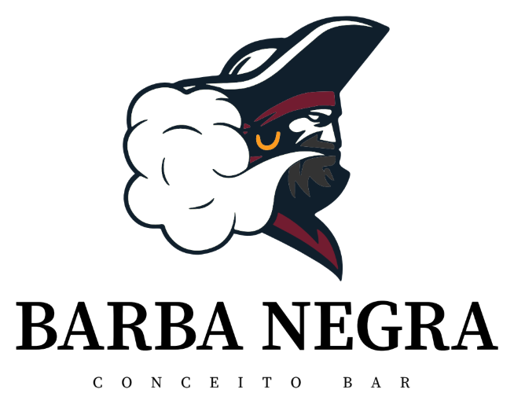
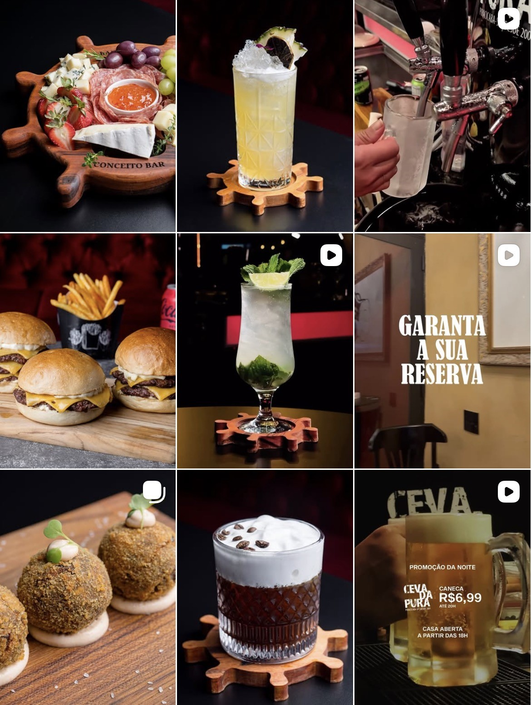
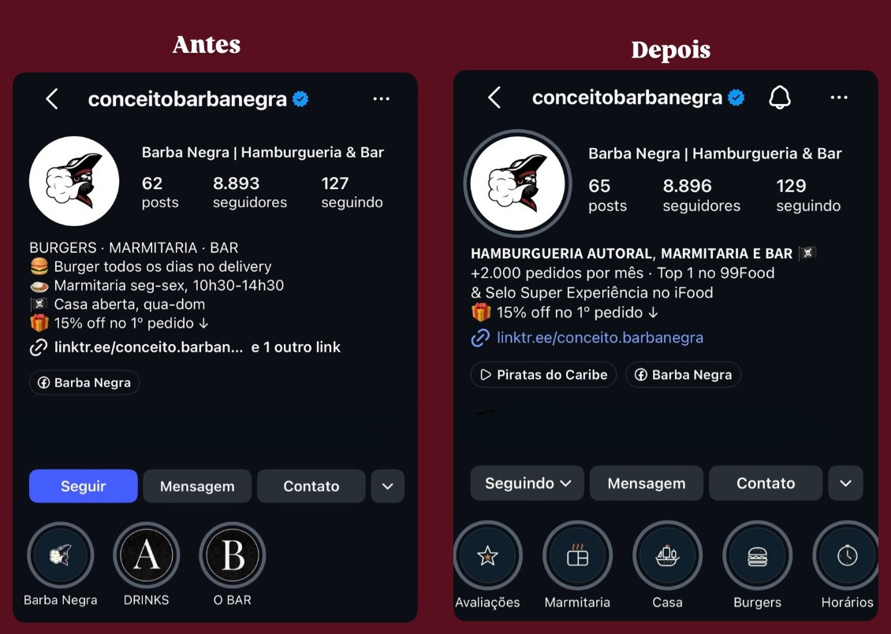
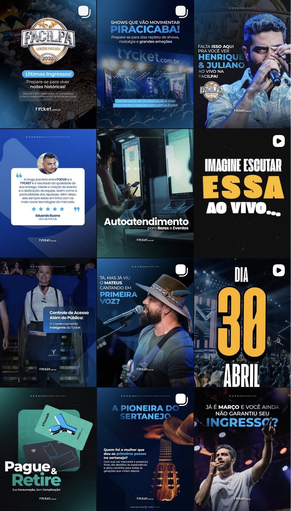
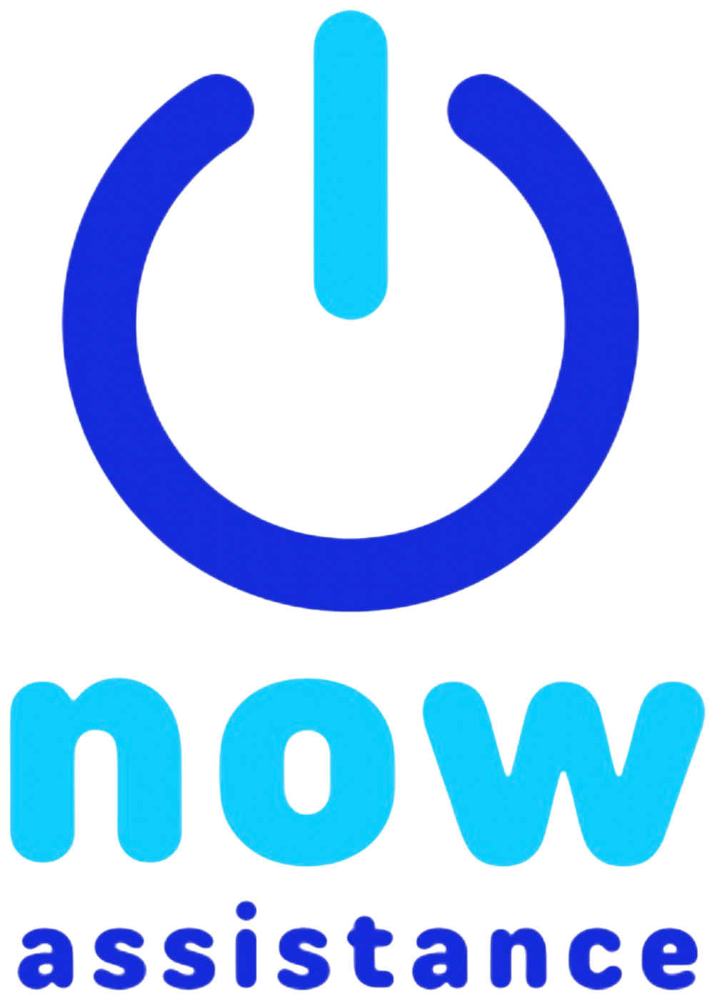
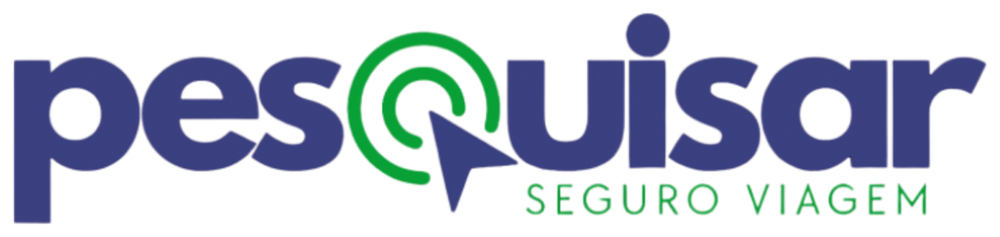

Assessoria de marketing para negócios e marcas pessoais.
A Vidotti Studio é um estúdio de assessoria de marketing. Cuidamos da estratégia, da marca e da presença de negócios e marcas pessoais para deixar claro o que os torna únicos, para que o cliente escolha você e não o concorrente maior ou mais barato.
Por trás do estúdio está a Adriely Vidotti, estrategista de marca e marketing com mais de 4 anos atendendo negócios locais, empresas B2B e marcas pessoais.
O que você faz, como funciona a operação e o que só o seu negócio entrega. É daí que sai a diferença real, e não de tendência.
Nos colocamos no lugar de quem compra: o que essa pessoa pensa, sente e já consome. Assim descobrimos o motivo pelo qual ela escolheria você.
Posicionamento, identidade e conteúdo saem da mesma lógica. Testamos ângulos, acompanhamos os dados e ajustamos com base no que funciona, não em achismo.
Para quem já tem presença ativa e prefere manter o marketing dentro de casa, com a equipe ou o próprio empreendedor, mas precisa de um norte.
O braço de marketing do seu negócio. Pensamos, analisamos o mercado e definimos o que vale a pena fazer e por quê, de acordo com as necessidades do negócio.
Começar pela consultoria não é custo extra: se a assessoria for fechada em até 30 dias, parte do valor é abatida.
04Nasceu como um hookah lounge conhecido em Piracicaba. Para virar hamburgueria autoral à noite e marmitaria delivery de dia, o posicionamento precisou mudar por completo.

Agora o desafio é levar esse público para o salão, mostrando por que vale sair de casa para viver o Barba Negra.


Tiqueteria de Piracicaba que já falava bem com o mercado B2B, os produtores de eventos. O desafio era conquistar também o público final: fazer as pessoas conhecerem a Tycket e quererem ir aos eventos dela, mostrando que ela é mais do que uma plataforma de ingressos, com o sistema Syscash, cartões de consumo e experiência no evento.



Um papo sem compromisso para entender o seu momento e mostrar por onde começar.